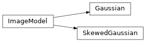

Toy model image generation¶
fake shower image generation for testing purposes
ctapipe.image.toymodel Module¶
Utilities to generate toymodel (fake) reconstruction inputs for testing purposes.
Examples:
>>> from instrument import CameraGeometry
>>> geom = CameraGeometry.make_rectangular(20, 20)
>>> showermodel = Gaussian(x=0.25 * u.m, y=0.0 * u.m,
length=0.1 * u.m, width=0.02 * u.m, psi='40d')
>>> image, signal, noise = showermodel.generate_image(geom, intensity=1000)
>>> print(image.shape)
(400,)
Classes¶
|
|
|
A shower image that has a skewness along the major axis |
Class Inheritance Diagram¶
